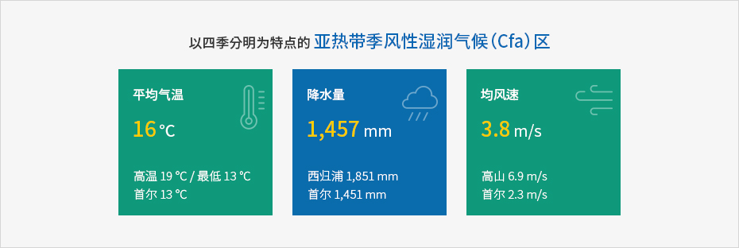

济州岛的地理及地质情况
- Home
- 基础情况
- 地理
- 济州岛的地理及地质情况
气候温暖、风调雨顺的岛屿——济州岛


以四季分明为特点的亚热带季风性湿润气候（Cfa）区
- 평균기온 16℃ - 최고 19℃ / 최저 13℃, 서울 13℃
- 강수량 1,457mm - 서귀포 1,851mm, 서울 1,451mm
- 평균풍속 3.8m/s - 고산 6.9m/s, 서울 2.3m/s

平均气温-济州15.5℃ 西归浦16.2℃
济州位于亚洲东海岸，属于柯本气候分类中的亚热带湿润气候区，冬季温暖， 降水量较为均匀。相较于其他地区，济州冬短夏长。
岛屿中央有一座海拔2000米左右的汉拿山，使得岛上各地气候各具特点。济州孤悬于韩半岛的西南海面上，因而天气变化明显，海陆风强劲，空气常年保持清新。
丰富的降水量-济州年均降水量约为39.53万亿吨
北(济州) 1,456.9mm 南(西归浦) 1850.8mm 东(城山) 1,840.9mm 西(高山) 1,094.7mm尽管降水量丰富，但济州没有河川径流。这是因为火山岩土壤和岩石具有良好透水性，加之降水集中在夏季。所以，济州岛上分布着丰富多样的植被，土壤肥沃，形成了多种农业活动，并拥有丰富的地下水资源。
岛内各地降水量差距较大，东部（城山）和南部（西归浦市）的降水量是西部（高山）的1.7倍。济州岛8月降水最多，12月降水最少。
风力资源无穷无尽 —— 风多
济州自古便以”风多“著称，不仅长年多风，还多强风。
岛上最重要的风当属冬季从西伯利亚刮来的西北季风。南部（西归浦市）和东部（城山浦）年均风速为3.1m/s，相对较为温暖，而北部（济州市）和西部（高山）则分别高达3.8m/s和6.9m/s，风力较为强劲。
特别是岛上最西端的高山村，风力最为强劲，最高风速超过80m/s的天数多达80天以上，而济州（北部）为14.5天，西归浦市（南部）为2.8天，城山浦（东部）仅为0.9天，岛内各地相差悬殊。
济州的强风给居民生活和自然景观带来巨大影响，催生出济州独特的文化和美景。最近，济州还对无穷无尽的风力资源加以利用，朝着新再生能源产业中心发展。
※ 资料来源 : 济州气象厅 (https://web.kma.go.kr/weather/climate/average_regional05.jsp), 济州特别自治道 (https://www.jeju.go.kr/geopark/park/jejuintro/climate.htm)